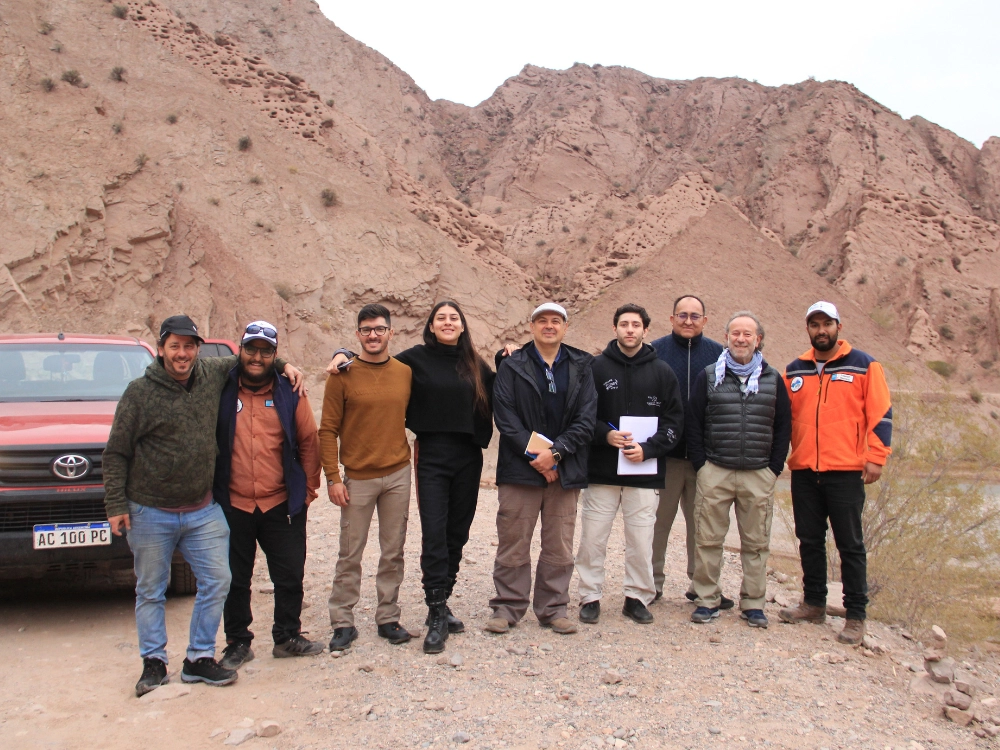

Descripción del proyecto
Se formuló el PLANTUR La Rioja 360 mediante un amplio proceso participativo que convocó a más de 600 personas en talleres regionales y contempló más de 70 entrevistas a actores públicos y privados. El resultado es un plan estratégico para impulsar el desarrollo turístico sostenible en un territorio de 89.680 km² y 384.000 habitantes, con un horizonte de cinco años, estructurado en cuatro programas de actuación y 67 proyectos, orientados a fortalecer la competitividad, la articulación territorial y la generación de oportunidades económicas a escala provincial.
← Volver al portfolio